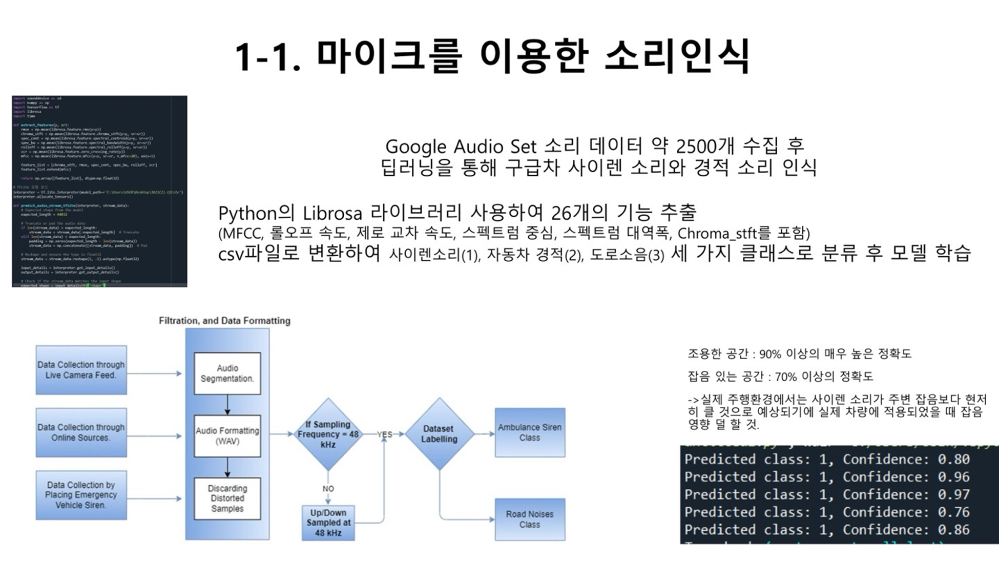
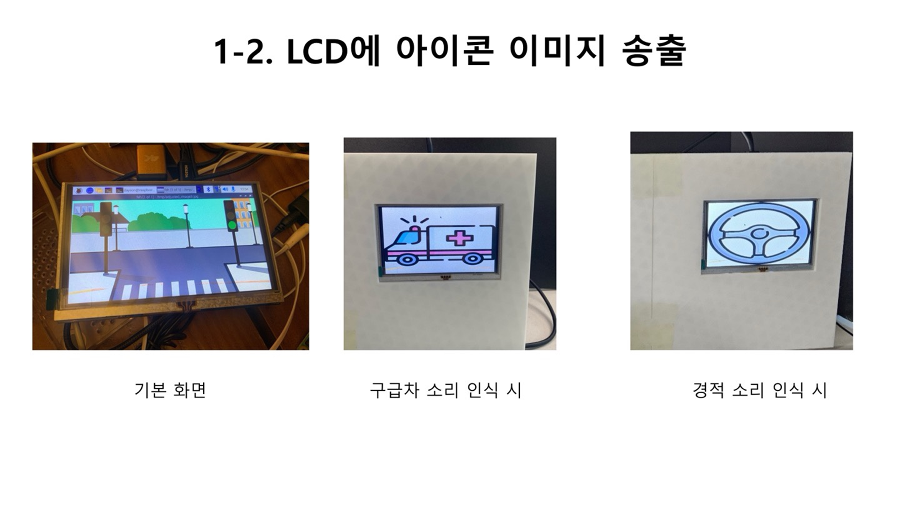
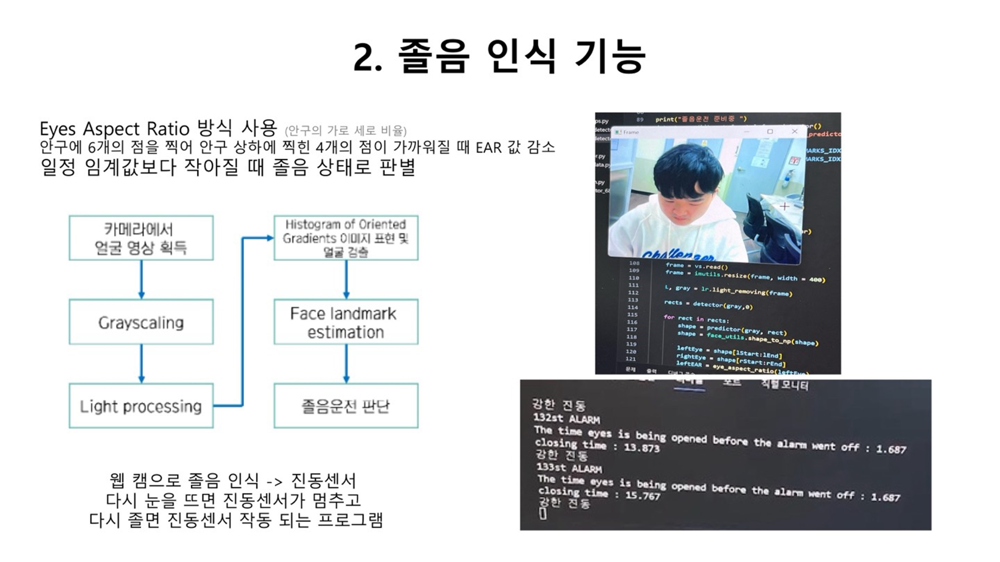
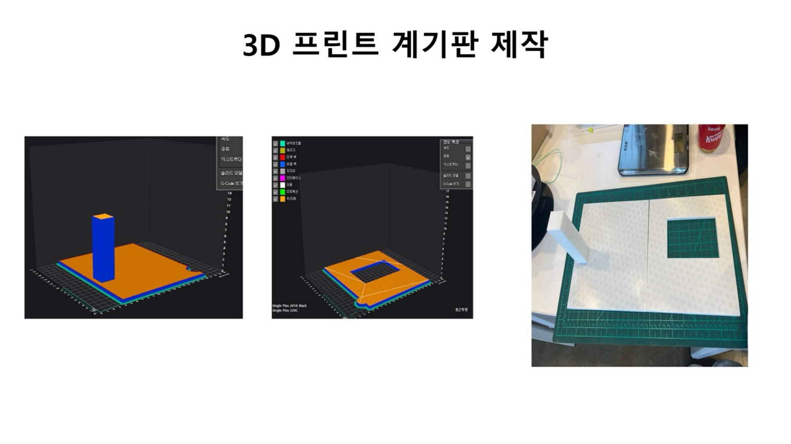
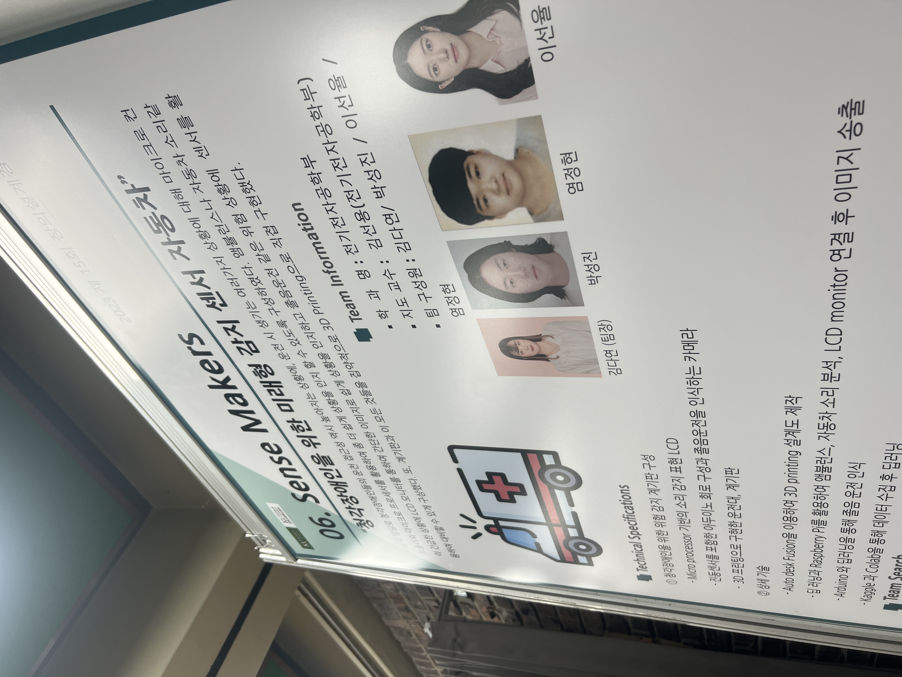

📌 프로젝트 개요 (Overview)
Developed a system that visualizes sound for hearing-impaired drivers to recognize road conditions and prevents drowsy driving.
Developed a system that visualizes sound for hearing-impaired drivers to recognize road conditions and prevents drowsy driving.




